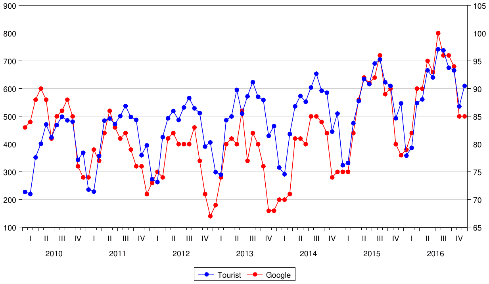
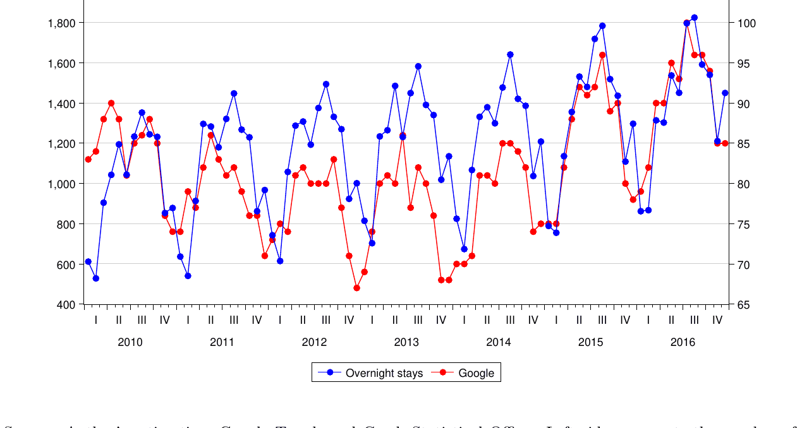
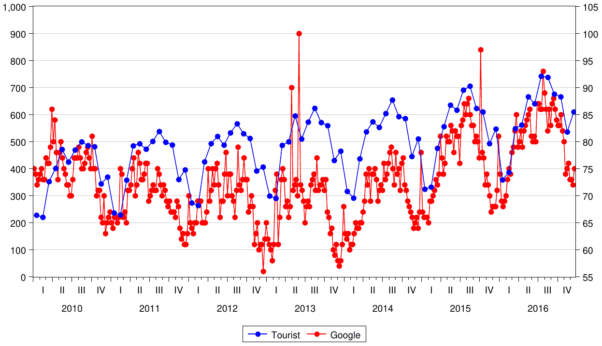
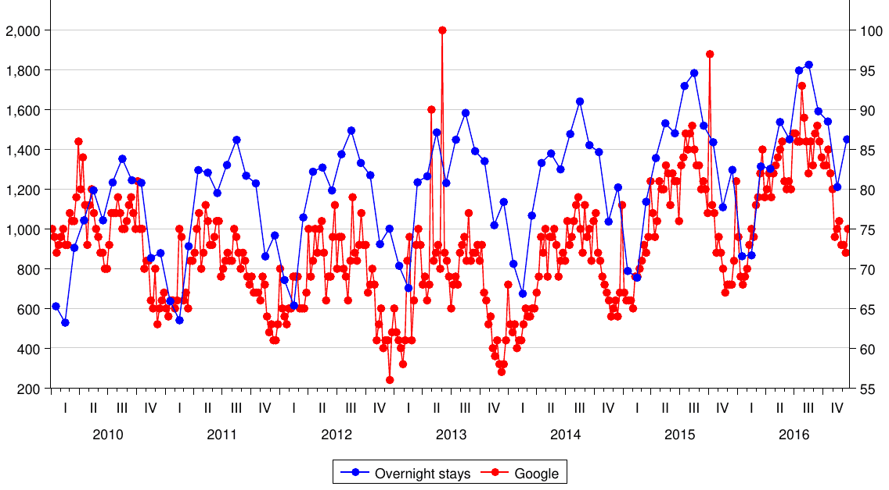
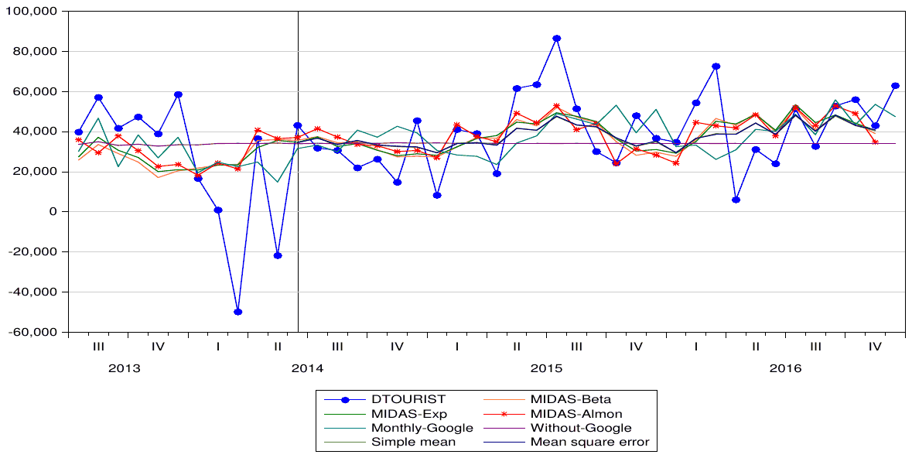
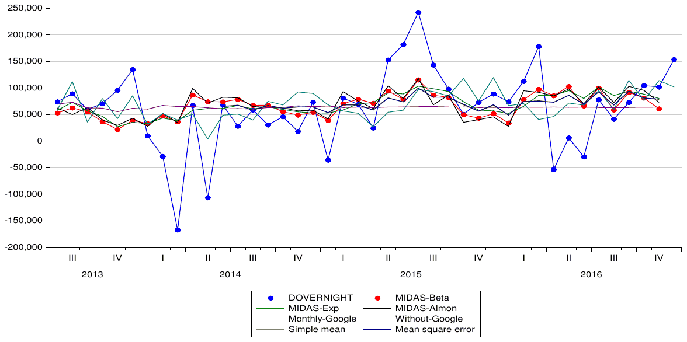

Forecasting Tourist Arrivals: Google Trends Meets Mixed Frequency Data
Tomas Havranek, Ayaz Zeynalov (2021), "Forecasting tourist arrivals: Google Trends meets mixed-frequency data." Tourism Economics 27(1): 129-148. doi.org/10.1177/1354816619879584 The text here is the working paper. It is the working paper of November 2018, the fullest version of this article that is openly available; the version of record is behind the publisher's paywall. Its abstract and the published one differ only in copy-editing, and the working paper prints the title in title case.
Tomas Havraneka,b and Ayaz Zeynalov*c
aCzech National Bank. bCharles University, Prague. cUniversity of Economics, Prague.
*Corresponding author: Jan Masaryk Centre of International Studies, Faculty of International Relations, University of Economics, Prague, W. Churchilla 4, 130 67 Prague-3, Czech Republic. e-mail: ayaz.zeynalov@vse.com.
November 22, 2018
Abstract
In this paper, we examine the usefulness of Google Trends data in predicting monthly tourist arrivals and overnight stays in Prague during the period between January 2010 and December 2016. We offer two contributions. First, we analyze whether Google Trends provides significant forecasting improvements over models without search data. Second, we assess whether a high-frequency variable (weekly Google Trends) is more useful for accurate forecasting than a low-frequency variable (monthly tourist arrivals) using Mixed-data sampling (MIDAS). Our results stress the potential of Google Trends to offer more accurate prediction in the context of tourism: we find that Google Trends information, both two months and one week ahead of arrivals, is useful for predicting the actual number of tourist arrivals. The MIDAS forecasting model that employs weekly Google Trends data outperforms models using monthly Google Trends data and models without Google Trends data.
Keywords: Google trends, mixed-frequency data, forecasting, tourism. JEL Codes: C53, L83, Z32
1. Introduction
People reveal useful information about their needs, wants, interests, and concerns through their internet search histories. This information may be the best explanation for Google's success, as Google search has rapidly increased the quantity of publicly accessible and usable information. That what people search for today is predictive of what they have done recently or will do in the near future is a reasonable assumption.
Several studies have focused on search data to assess their relationship with current consumer behavior for prediction purposes (Askitas and Zimmermann, 2009; Hong, 2011; Choi and Varian, 2012, among others). For example, Choi and Varian (2012) examine internet searches to evaluate the nowcasting potential of Google Trends using different economic indicators, such as unemployment claims, automobile sales, tourist journeys, and consumer confidence. The authors claim that Google Trends might not be informative for future predictions; nevertheless, they find that it is a useful tool for "predicting the present".
Several studies have suggested that Google trends data are a valuable economic indicator. Researchers have emphasized that Google Trends has strong potential for assessing unemployment rate changes in Germany (Askitas and Zimmermann, 2009), France (Fondeur and Karamé, 2013), Visegrad countries (Pavlicek and Kristoufek, 2015), the UK (Smith, 2016) and the US (D'Amuri and Marcucci, 2017). Goel et al. (2010) examine, among other things, the relationship between the use of search engines and real estate sales, as well as disease prevalence. Other researchers have tested whether the Google Trends Automotive Index can improve predictions of car sales in Chile (Carriere-Swallow and Labbe, 2013) and in Germany (Fantazzini and Toktamysova, 2015), have developed forecasts of the real oil price using Google search results (Fantazzini and Fomichev, 2014), have stressed that Google Flu Trends data can follow the path of an outbreak using United States data from 2003 to 2009 (Dukic et al., 2012). Dergiades et al. (2018) proposed corrections in terms of language bias and the platform bias of search engines to improve the predictive power of forecasting. The authors conclude that an adjusted search engine index related to different languages and different sources increases forecasting performance compared to the non-adjusted index.
This study is an attempt to evaluate the nexus between Google Trends and tourist arrivals in Prague during the period 2010-2016. Predicting tourist arrivals and overnight stays can not only play a pivot role in the business market and for policy makers but also assist with the development of the methodology used in the literature on tourism. The main objective of this paper is to identify whether Google Trends has value added in predicting tourist demand while making the following contributions to the field: First, the paper is focused on a possible connection between internet searching and tourist arrivals in real time. Google Trends has potential for the business market to define nowcasting tourist activities and to avoid months of waiting to obtain information on tourist arrivals from the state statistics department. Second, this paper provides a step-by-step procedure for tourist forecast modeling while avoiding same-frequency modeling. Mixed-data sampling (MIDAS) enables us to estimate models that explain a low-frequency variable by means of high-frequency variables and their lags.
The rest of this paper is organized as follows. Section 2 discusses the literature on tourist arrival forecasting and Google Trends. Section 3 discusses the methodology and data sampling. Section 4 presents the empirical results on MIDAS models applied to tourist arrivals and overnight stays. Section 5 concludes. Robustness checks are presented in the Appendix.
2. Literature Review
Tourism forecasting has been the focus of many studies. Researchers have analyzed tourist demand using two price indices from origin and destination countries to evaluate the forecasting performance of tourist preferences based on tourist arrivals to Spain (Gonzalez and Moral, 1995) and have developed forecasting models based on different time series methods using tourist flows from China, South Korea, the UK and the USA to Hong Kong (Song et al., 2011). Researchers have used different time series models to assess the determinants of tourist arrivals (Athanasopoulos et al., 2011; Akin, 2015) and have proposed artificial neural network (ANN) methods (Hadavandi et al., 2011; Claveria and Torra, 2014). The main objective of Claveria and Torra (2014)'s study was to determine which method provided the most accurate information on tourist number; they found that autoregressive integrated moving average (ARIMA) models outperformed self-exciting threshold autoregressive (SETAR) and ANN models. A meta-analysis in this literature performed by Peng et al. (2014) claims that the choice of forecasting method is the main reason for contradictory results among studies.
The usefulness of Google Trends data to predict tourism has also been examined previously. Bangwayo-Skeete and Skeete (2015) suggest that Google search volume provides advantages for tourism demand forecasting for Caribbean destinations. Researchers have argued that Google Trends, as a concurrent indicator, could promote more precise forecasting in Switzerland (Siliverstovs and Wochner, 2017) and that a strong correlation exists between hotel visitors and Google search queries in Puerto Rico (Rivera, 2016). Park et al. (2017) focus on short-term forecasting of tourist outflows from South Korea to Japan. They claim that Google Trends data not only improve the precision of tourism demand forecasting but also that the out-of-sample forecasting performance outperforms in-sample forecasting with Google Trends.
Prague is one of the most popular destinations on the European continent, with more than 6 million foreign visitors annually, accounting for up to 15 million overnight stays. Tourism makes a major contribution to Prague's economic development: tourism accounts for 9% of GDP and provides employment for approximately 17% of the working population in the service sector1. Therefore, accurate forecasts of tourism volume play a major role in tourism planning, as forecasts enable destinations to predict infrastructure development needs.
Google Trends provides free, vast and almost real-time information but has some disadvantages. First, Google shows only absolute data, providing an index that is relative to all searches. Second, internet users might type similar words when searching for different topics or different words when searching for the same topic. Third, web search queries are related to personal characteristics, such as education, income, and age. Clearly, data from Google searches are imperfect; however, because Google Trends provides one of the best real-time information databases, it has the potential to act as a leading indicator.
The MIDAS method proposed by Ghysels et al. (2006) was further developed by Andreou et al. (2010), who introduced a new decomposition for MIDAS regression. Empirical studies in the MIDAS literature have analyzed the dynamics of microstructure noise and volatility (Ghysels et al., 2007), GDP growth forecasting (Ghysels and Wright, 2009; Andreou et al., 2012), nowcasting and quarterly GDP growth forecasting in the euro area (Kuzin et al., 2011), and stock market volatility and macroeconomic activity (Engle et al., 2013; Girardin and Joyeux, 2013). Götz et al. (2014) developed an alternative mixed-frequency error-correction model for non-stationary variables sampled at different frequencies that are possibly co-integrated. Co-integrated MIDAS has been also introduced by Miller (2016) focusing on efficient estimation of the co-integrating vector of model with a low-frequency and high-frequency series. MIDAS is a method for estimating and forecasting the impact of high-frequency variable(s) on low-frequency dependent variables that can avoid the traditional requirement that variables have the same frequency. MIDAS uses a distributed lag of polynomials to ensure parsimonious specifications for handling series sampled at different frequencies.
This paper analyzes the eligibility of Google search data for forecasting tourist arrivals and overnight stays in Prague and reports whether weekly Google Trends data can potentially improve forecasting performance when used with MIDAS regression. First, the study investigates whether Google Trends offers significant forecasting improvements. Second, it assesses whether a higher-frequency explanatory variable leads to more accurate forecasting by comparing weekly and monthly Google Trends data using MIDAS regression.
3. Methodology and Data
3.1. Methodology
This study considers how to obtain better forecasts of tourist arrivals and overnight stays by using MIDAS and aims to detect whether Google search queries can provide insight into tourism prediction for Prague tourist arrivals and overnight stays. Forecasting methodology begins with choosing a baseline model with meaningful predictive power. Then, the baseline model is run both with and without Google data to analyze whether Google can improve tourist arrival forecasting.
The MIDAS methodology was proposed by Ghysels et al. (2007) and developed by Andreou et al. (2010). Andreou et al. (2010) introduce a new decomposition of the conditional mean into two different parts: an aggregated term based on equal or flat weights and a nonlinear term, which involves weighted, higher-order differences of a high-frequency process. Götz et al. (2014) and Miller (2016) developed mixed-frequency error-correction model. MIDAS was used to study tourism data by Bangwayo-Skeete and Skeete (2015), who emphasized that Google Trends information on tourists offers substantial benefits to forecasters: MIDAS outperformed other methods using a dataset containing monthly tourist arrivals from the US, Canada and the UK to five destinations in the Caribbean.
The methodology in this study follows Ghysels et al. (2007) and Andreou et al. (2010) and has been organized specifically for this study:
for , where the function is a polynomial specification that determines the weights for temporal aggregation. represents a lag operator, such as . In the model, represents a low-frequency dependent variable, and represents a high-frequency independent variable. is a polynomial lag operator. is observed times in the same period (weekly, ). represents the effect of lag values of tourist arrivals, and represents the effect of search.
The parameterization of the weighting function is one of the main contributions of MIDAS regression. Ghysels et al. (2007) propose two different parameterizations. The first is
which suggests an exponential Almon specification (Almon, 1965). Ghysels et al. (2006) uses functional form (2) with two parameters (). The specification gives equal weights when ; otherwise, the weights can decline rapidly or slowly with the number of lags. The rate of decline determined by the number of lags is included in the model. The exponential function of weight can produce hump shapes, and a decreasing weight is guaranteed as long as .
The second parameterization is a Beta formulation:
where
and are hyperparameters governing the shape of the weighting function, and
is the standard gamma function. The Beta specification also gives equal weights when . The rate of weight decline determines how the lags are included in the model, as in the Almon case. The weight slowly declines while and . As increases, the weight declines rapidly.
Evaluation of the quality of a forecast requires the forecast values to be compared to actual values and values from alternative models. The Diebold-Mariano test compares two forecasting models to determine whether they have equal predictive accuracy or one model is more accurate. The Diebold-Mariano test is described as
where and are the mean and sample standard deviation of . estimates
where represents either a squared or absolute difference between the forecast and the actual values of two models (). We concentrate on the absolute values, defined as , where represents the forecast value and represents the observed real value. The null hypothesis of the Diebold-Mariano test is that both forecasts have the same accuracy; the alternative hypothesis is that Model 2 (Google Trends model) is more accurate than the baseline model (Model without Google Trends).
3.2. Data and descriptive statistics
Monthly data of tourist arrivals and overnight stays from different countries to Prague from January 2010 to December 2016 were obtained from the Czech Statistical Office and Prague Immigration Department. Search volume histories related to the search terms "flights to Prague" and "hotels in Prague" were collected from Google Trends.
The weekly and monthly data series from Google Trends cover the same period. Google Trends measures how often a particular search-term is entered relative to the total Google search-volume across various countries (regions) and in various languages. Trends adjust search data to make comparisons: each data point is divided by the total number of searches for the geography and time range. The resulting numbers are then scaled to a range of 0 to 100 based on the topic's proportion to all searches on all topics.

Source: Author's estimation, Google Trends and Czech Statistical Office. Left side represents the number of tourist, right side represents Google Trends.

Source: Author's estimation, Google Trends and Czech Statistical Office. Left side represents the number of tourist, right side represents Google Trends.
Figures 1 and 2 show monthly tourist arrivals and overnight stays and, respectively, monthly Google search results. Visual inspection of the figures indicates a strong correlation between monthly tourist arrivals and overnight stays. Both time series show an upward trend and seasonal variation. Multiple methods are available for time series forecasting based on trends and seasonality. The natural logarithm of year-on-year growth has been used to eliminate both linear trends and seasonal variation.

Source: Author's estimation, Google Trends and Czech Statistical Office. Left side represents the number of tourist, right side represents Google Trends.

Source: Author's estimation, Google Trends and Czech Statistical Office. Left side represents the number of tourist, right side represents Google Trends.
Figures 3 and 4 show monthly tourist arrivals and overnight stays and, respectively, weekly Google search results. Both overnight stays and weekly Google search results show an upward trend and seasonal variation, as well. Although a few outliers are observed, an overall close association is clear. These visual assessments provide support for investigating and developing models to analyze whether Google Trends can improve forecasting and prediction of tourist arrivals to Prague.
Tables 1 and 2 present descriptive statistics of tourist arrivals and overnight stays in Prague by country of origin between January 2010 and December 2016. The tables show the top ten countries, which have a substantial impact on tourist arrivals and overnight stays in Prague. These ten countries account for 64% of all tourist arrivals (Table 1) and 62.5% of overnight stays (Table 2) in Prague. During this period, Germany, Russia and the USA are the top three countries in both series. China and South Korea present considerable upward trends for both tourist arrivals and overnight stays in Prague.
Additionally, this study applies the augmented Dickey-Fuller (ADF) test, the Phillips-Perron (PP) test, and the Kwiatkowski-Phillips-Schmidt-Shin (KPSS) test to assess the unit root hypothesis. The ADF and PP methods test the unit root hypothesis in the level values of tourist arrivals and overnight stays (Table 3) and the difference value (Table 4), and the KPSS method tests for stationarity in both the true and differenced values (Tables 3 and 4).
As in Table 3, for most countries of origin, we cannot reject the null hypothesis of a unit root at the 5% level. Similar results are obtained for the KPSS test, where the null hypothesis of stationarity is rejected in most cases. When the tests are applied to the logarithmic difference of individual time series (Table 4), the null of nonstationarity is strongly rejected in most cases. For the KPSS test, we cannot reject the null hypothesis of a unit root at the 5% level for any country. These results imply that differencing is required in most cases and prove the importance of deseasonalizing and detrending tourist arrivals and overnight stays before modeling and forecasting.
An adjusted MIDAS model is:
for , and . The dependent variable is the natural logarithm of tourist arrivals year-on-year change. The function is a polynomial specification that determines the weights for temporal aggregation, such as Beta, Exponential or Almon. is a polynomial lag operator of tourist arrivals, and represents a lag operator of the high-frequency independent variable . represents the effect of the lag values of year-on-year change of tourist arrivals, and represents the effect of the high-frequency variable .
| Country | Mean | SD | Min | Max |
|---|---|---|---|---|
| Monthly total | 487152.50 | 125436.20 | 220329 | 741900 |
| Germany | 59804.11 | 18682.81 | 21402 | 97292 |
| Russia | 32241.35 | 11337.70 | 8966 | 62742 |
| USA | 29904.94 | 15031.51 | 6875 | 61637 |
| UK | 27939.21 | 5735.94 | 14377 | 40716 |
| Italy | 24400.92 | 9174.48 | 11715 | 43163 |
| France | 18618.32 | 4296.31 | 8401 | 27490 |
| Slovakia | 16479.82 | 4981.66 | 6489 | 27600 |
| Poland | 14688.13 | 6105.52 | 4212 | 28246 |
| China | 10884.94 | 7149.15 | 1515 | 29390 |
| South Korea | 9986.29 | 6506.87 | 1528 | 28582 |
| Others | 175844.80 | 55457.10 | 68354 | 308403 |
Source: Author's estimation.
| Country | Mean | SD | Min | Max |
|---|---|---|---|---|
| Monthly total | 1199376.00 | 304189.60 | 528122 | 1826220 |
| Germany | 141091.61 | 47406.31 | 49201 | 235804 |
| Russia | 129391.30 | 49948.31 | 36216 | 269878 |
| USA | 73905.63 | 36767.10 | 16752 | 150320 |
| UK | 69880.68 | 15795.89 | 34391 | 107953 |
| Italy | 70228.39 | 30671.20 | 31510 | 136985 |
| France | 48679.69 | 12687.98 | 21125 | 76212 |
| Slovakia | 31344.48 | 9997.55 | 12033 | 59799 |
| Poland | 29115.83 | 12817.48 | 8309 | 61846 |
| China | 19487.88 | 12925.09 | 2834 | 56167 |
| South Korea | 16943.52 | 11191.83 | 2978 | 52099 |
| Others | 449190.00 | 148345.90 | 171762 | 794039 |
Source: Author's estimation.
| Country | Tourist arrivals | Overnight stays | ||||
|---|---|---|---|---|---|---|
| ADF | PP | KPSS | ADF | PP | KPSS | |
| Total | 1.81 | -3.73 | 0.89 | 0.08 | -4.09 | 0.66 |
| Germany | 1.08 | -4.97 | 0.74 | 0.90 | -5.08 | 0.56 |
| Russia | -1.25 | -4.95 | 0.30 | -1.12 | -5.59 | 0.33 |
| USA | 0.09 | -3.77 | 0.56 | 0.15 | -3.85 | 0.47 |
| UK | 2.13 | -3.92 | 0.93 | 2.00 | -4.17 | 0.89 |
| Italy | -1.28 | -11.70 | 0.36 | -1.38 | -13.48 | 0.16 |
| France | -2.54 | -6.14 | 0.12 | -1.52 | -6.83 | 0.06 |
| Slovakia | 1.59 | -1.99 | 1.24 | 2.12 | -2.46 | 1.19 |
| Poland | 1.71 | -4.04 | 0.45 | 1.85 | -4.02 | 0.38 |
| China | 1.13 | -2.89 | 1.01 | 1.45 | -2.93 | 0.99 |
| South Korea | 2.33 | -2.27 | 1.06 | 4.56 | -2.22 | 1.09 |
| Others | 3.20 | -3.95 | 0.65 | 2.52 | -4.05 | 0.50 |
Source: Author's estimation. The estimation represents the monthly data for January 2010 - December 2016. Tests for unit roots: ADF — augmented (Dickey and Fuller, 1979) test, the 5% critical value is -2.90; PP - (Phillips and Perron, 1988) test, the 5% critical value is -2.89. Test of stationarity: KPSS — (Kwiatkowski et al., 1992) test, the 5% critical value is 0.46.
| Country | Tourist arrivals | Overnight stays | ||||
|---|---|---|---|---|---|---|
| ADF | PP | KPSS | ADF | PP | KPSS | |
| Total | -4.05 | -7.72 | 0.35 | -3.78 | -6.90 | 0.09 |
| Germany | -4.52 | -10.63 | 0.37 | -4.16 | -10.01 | 0.34 |
| Russia | -2.43 | -2.43 | 0.70 | -2.46 | -2.22 | 0.73 |
| USA | -4.22 | -4.10 | 0.13 | -3.76 | -3.76 | 0.14 |
| UK | -3.79 | -3.52 | 0.63 | -2.48 | -2.96 | 0.66 |
| Italy | -7.28 | -7.27 | 0.08 | -7.27 | -7.27 | 0.07 |
| France | -2.67 | -5.92 | 0.28 | -2.77 | -6.11 | 0.26 |
| Slovakia | -6.33 | -6.37 | 0.31 | -5.59 | -5.66 | 0.48 |
| Poland | -6.83 | -6.91 | 0.47 | -6.36 | -6.52 | 0.54 |
| China | -4.14 | -4.20 | 0.27 | -4.31 | -4.17 | 0.33 |
| South Korea | -3.81 | -3.84 | 0.73 | -1.91 | -3.55 | 0.82 |
| Others | -7.77 | -7.89 | 0.95 | -3.72 | -6.42 | 0.629 |
Notes: Author's estimation. The estimation represents the monthly data for January 2010 - December 2016. Tests for unit roots: ADF — augmented (Dickey and Fuller, 1979) test, the 5% critical value is -2.90; PP - (Phillips and Perron, 1988) test, the 5% critical value is -2.89. Test of stationarity: KPSS — (Kwiatkowski et al., 1992) test, the 5% critical value is 0.46.
4. Results
MIDAS models of tourist arrivals and overnight stays in Prague are presented in this section. Official statistical data of overnight stays and tourist arrivals were used to assess the forecasting performance of weekly Google MIDAS regression models. All models were estimated using data from January 2010 to December 2016 and weekly Google Trends information.
| Weekly Google Search | Monthly Google | Without Google | |||
|---|---|---|---|---|---|
| Beta coeff | Exp coeff | Almon coeff | ARIMA | ARIMA | |
| DLTOURIST(-1) | 0.066 | 0.042 | 0.135 | 0.079 | 0.114 |
| (0.142) | (0.139) | (0.147) | (0.127) | (0.133) | |
| DLTOURIST(-2) | 0.280** | 0.269** | 0.262** | 0.214* | 0.335** |
| (0.137) | (0.124) | (0.134) | (0.123) | (0.126) | |
| DLTOURIST(-3) | -0.148 | -0.156 | -0.160 | -0.252* | -0.132 |
| (0.139) | (0.130) | (0.137) | (0.127) | (0.132) | |
| DLTOURIST(-12) | -0.270** | -0.276** | -0.289** | -0.252** | -0.169 |
| (0.129) | (0.122) | (0.130) | (0.116) | (0.122) | |
| Weekly Google | 1.049** | 1.133*** | 1.090*** | ||
| (0.447) | (0.401) | (0.140) | |||
| BETA01 | 1.076*** | -1.720 | 1.825** | ||
| (0.081) | (4.172) | (0.758) | |||
| BETA02 | 20.000*** | 0.000 | -0.808** | ||
| (0.002) | (0.847) | (0.379) | |||
| BETA03 | -0.037 | 0.074* | |||
| (0.086) | (0.037) | ||||
| Monthly Google (-1) | -0.738 | ||||
| (0.622) | |||||
| Monthly Google (-2) | 1.783*** | ||||
| (0.632) | |||||
| CONSTANT | -0.403 | -0.448 | -0.457 | -0.438 | 0.290*** |
| (0.298) | (0.275) | (0.977) | (0.279) | (0.080) |
Notes: The dependent variable is the natural logarithm of tourist arrivals year-on-year change; the estimated equation is . Columns (2)-(4) represent weekly Google data, and Column (5) represents monthly Google data. Column (6) represents the ARIMA model without Google trends information. Column (2) represents MIDAS with a beta weight function. Column (3) represents MIDAS with an exponential weight function. Column (4) represents the Almon formulation. Column (5) represents the ARIMA(1,1,1) results with monthly data. ***, **, and * denote statistical significance at the 1%, 5%, and 10% levels, respectively.
Table 5 presents results for 3 different weighted weekly MIDAS regressions, monthly Google data, and a model without Google trends information. The results confirm that two and twelve months ahead are significantly correlated with changes in tourist arrivals. To illustrate, tourist arrivals data are monthly, while our Google Trends information is weekly. We use 8 lags (weeks) of Google Trends to explain each month of tourist arrivals. The estimation uses the 8 weeks up to, and including, the three weeks of the corresponding month. One week ahead has a significant impact on tourist arrivals. The other lags are not presented here. These results are comparable to those obtained by (Bangwayo-Skeete and Skeete, 2015), (Siliverstovs and Wochner, 2017) and (Park et al., 2017), who found evidence that Google Trends information offers significant benefits for tourist forecasting.
| Weekly Google Search | Monthly Google | Without Google | |||
|---|---|---|---|---|---|
| Beta coeff | Exp coeff | Almon coeff | ARIMA | ARIMA | |
| DLTOURIST(-1) | 0.175 | 0.140 | 0.233 | 0.186 | 0.181 |
| (0.128) | (0.128) | (0.144) | (0.121) | (0.128) | |
| DLTOURIST(-2) | 0.319** | 0.306** | 0.321*** | 0.298** | 0.335*** |
| (0.122) | (0.123) | (0.130) | (0.116) | (0.122) | |
| DLTOURIST(-3) | -0.162 | -0.177 | -0.181 | -0.262** | -0.189 |
| (0.125) | (0.125) | (0.133) | (0.121) | (0.127) | |
| DLTOURIST(-12) | -0.333*** | -0.318** | -0.323*** | -0.289** | -0.254** |
| (0.119) | (0.120) | (0.125) | (0.111) | (0.117) | |
| Weekly Google | 1.759 | 2.422** | 1.843** | ||
| (1.179) | (1.124) | (0.951) | |||
| BETA01 | 1.020*** | 27.609 | 6.030*** | ||
| (0.067) | (29.423) | (2.220) | |||
| BETA02 | 3.265 | -9.458 | -2.779** | ||
| (5.047) | (14.475) | (1.108) | |||
| BETA03 | -0.140*** | 0.256** | |||
| (0.035) | (0.108) | ||||
| Monthly Google (-1) | -3.337* | ||||
| (1.793) | |||||
| Monthly Google (-2) | 5.243*** | ||||
| (1.797) | |||||
| CONSTANT | -0.643 | -1.104 | -0.959 | -0.868 | 0.59*** |
| (0.843) | (0.801) | (0.900) | (0.793) | (0.158) |
Notes: The dependent variable is the natural logarithm of overnight stays year-on-year change; the estimated equation is . Columns (2)-(4) represent weekly Google data, and Column (5) represents monthly Google data. Column (2) represents MIDAS with a beta weight function. Column (3) represents MIDAS with an Almon weight function, and Column (4) represents the step formulation. Column (5) represents ARIMA for results monthly data. ***, **, and * denote statistical significance at the 1%, 5%, and 10% levels, respectively.
Monthly Google regression is performed with an ARIMA(1,1,1) model. The results indicate that data from two months ahead of arrivals are useful for assessing the actual number of tourist arrivals. Monthly data provide valuable insight into the understanding of tourist arrivals to Prague. The results confirm that carefully identified web search activity indices, such as Google Trends information, encompass early signals that can assist considerably in the prediction of tourists arrivals in Prague two months ahead.
The results for overnight stays in Prague are similar to those for tourist arrivals (Table 6). Additionally, both one and two months ahead, Google monthly data convey useful predictive content for overnight stays. While tourist arrivals correspond to international visitors entering the country and include both tourists and same-day, non-resident visitors, overnight stays refer to the number of nights spent by non-resident tourists in accommodation establishments. Tourist arrivals concern all tourism activity, with overnight stays being particularly important for hotels and hostels.
The top three countries of origin for tourist arrivals and overnight stays were selected to ensure the robustness of the MIDAS results using weekly Google trends information. German tourist arrivals and overnight stays in Prague present similar results to the benchmark model result (see Appendix, Table A1). All three country models with weekly Google Trends information performed better than their corresponding baseline models during the same prediction period (see Appendix). The results for Russia and the UK also indicate that data from one month ahead on tourist arrivals and overnight stays have a significant correlation with current tourists inbound, and MIDAS weekly Google Trends model frameworks perform better than other baseline models (Table A2, Table A3).
| RMSFE | MAE | MAPE | SMAPE | Theil's U | |
|---|---|---|---|---|---|
| Part A: Tourist Arrivals | |||||
| MIDAS-Beta | 15718.42 | 13011.24 | 58.24 | 36.90 | 0.19 |
| MIDAS-Exp | 16142.47 | 13223.80 | 59.43 | 37.09 | 0.19 |
| MIDAS-Almon | 15077.63* | 12270.19* | 55.87* | 35.08* | 0.18* |
| Monthly-Google | 18426.94 | 14859.77 | 57.95 | 40.39 | 0.22 |
| Without-Google | 19368.91 | 15272.02 | 57.05 | 41.43 | 0.25 |
| Mean | 16129.36 | 13166.85 | 56.85 | 37.02 | 0.20 |
| MSE | 16125.15 | 13131.82 | 56.75 | 36.94 | 0.20 |
| Part B: Overnight stays | |||||
| MIDAS-Beta | 57650.78* | 44641.69* | 124.11 | 64.41* | 0.34 |
| MIDAS-Exp | 59185.03 | 45020.40 | 123.65 | 63.37 | 0.34 |
| MIDAS-Almon | 58197.61 | 45517.45 | 124.78 | 66.57 | 0.33* |
| Monthly-Google | 63678.66 | 48874.18 | 111.31 | 66.78 | 0.36 |
| Without-Google | 65173.31 | 48782.67 | 103.44* | 67.88 | 0.40 |
| Mean | 58850.05 | 44027.4o | 115.13 | 62.68 | 0.35 |
| MSE | 58857.74 | 44035.83 | 115.08 | 62.68 | 0.35 |
Notes: The MIDAS models represent weekly Google data with different weighting functions. The Monthly-Google model represents regressions with monthly Google data, and the Without-Google model represents the result without Google trends information. Column (2) presents the root mean squared forecast error (RMSFE) results, Column (3) presents the mean absolute error (MAE) results, Column (4) presents the mean absolute percentage error (MAPE) results, Column (5) presents the symmetric MAPE results, and Column(6) presents Theil's U Statistics. MSE represents the mean standard error. * denotes the most accurate forecasting model.
Next, an out-of-sample forecast evaluation was performed to assess the forecasting accuracy for each model. Thus, for all models, in-sample estimations were performed from January 2010 to May 2014, and out-of-sample forecasting was performed for June 2014 to December 2016.
The most common methods used to determine forecasting accuracy are functions of the forecasting error. The root mean squared forecast error (RMSFE) and mean absolute percentage error (MAPE) were used to assess the forecasting ability of MIDAS using weekly Google Trends data. The results are shown in Table 7. Lower MAPE and RMSE values indicate that weekly MIDAS forecasting methods offer better forecasting performance than the model with monthly Google Trends informaiton and the model without Google Trends information. The usefulness of a forecasting model must be evaluated based on the out-of-sample forecasting performance. The results show that the MIDAS-Almon weekly Google model of tourist arrivals performs better than the other models (Part A, Table 7). The MIDAS-Almon model has the lowest forecasting error in terms of all metrics - RMSFE, MAPE, MAE. For the overnight stay results, while MIDAS-Beta has the lowest RMSFE and MAE, the model without Google Trends has a lower MAPE (Part B, Table 7).
Figures 5 and 6 show the forecasting evaluations using different MIDAS regressions for tourist arrivals and overnight stays. For tourist arrivals, MIDAS-Almon is the best forecasting model (see Figure 5), whereas MIDAS-Beta is the best forecasting model for overnight stays (see Figure 6).

Notes: Lines represent the forecasting results from different models. DTOURIST represents the change in tourist arrivals. The most accurate forecasting method is MIDAS-Almon.

Notes: Lines represent the forecasting results from different models. DTOURIST represents the change in tourist arrivals. The most accurate forecasting method is MIDAS-Almon.
The values of the Diebold-Mariano test are based on the absolute values of the out-of-sample period of July 2014 - December 2016. The positive significant values indicate that the MIDAS forecasting models are statistically more accurate than the competing models without Google Trends. The null hypothesis is that both forecasts have the same accuracy. Model 2 (Google Trends model) is more accurate than the baseline model (Model without Google trends). All models reject the null hypothesis; therefore, the Google Trends models are more accurate than the baseline model (Table 8).
| w/o Google Trends | Model with Google | Monthly Google | ||
|---|---|---|---|---|
| ARIMA | MIDAS-Beta | MIDAS-Exp | MIDAS-Almon | ARIMA |
| Tourist arrivals | 4.61*** | 4.63*** | 4.83*** | 4.32*** |
| Overnight stays | 4.45*** | 4.83*** | 5.01*** | 4.07*** |
Notes: The training sample is from the period of January 2012 - June 2014, and the evaluation sample is from July 2014 - December 2016. The Diebold-Mariano test compares the baseline model without Google Trends with the Google Trends models. The null hypothesis is that both forecasts have the same accuracy; the alternative hypothesis is that the Google Trends model is more accurate than the model without Google Trends information.
In summary, the model with weekly Google Trends information performed better than the models with monthly Google Trend information and models without Google Trends information. Therefore, we can conclude that weekly Google data improves the forecasting performance for both tourist arrivals and overnight stays in Prague.
5. Concluding Remarks
The main objective of this study is to perform accurate nowcasting and forecasting of tourist arrivals and overnight stays in Prague. The accurate forecasting of tourism trends is important due to the rapidly growing volume of tourism relative to other sectors of the economy, both in Prague and globally. Internet searches play an increasingly important role in tourism and in assessing tourism consumption dynamics. This fact has inspired our evaluation of the impact of Google Trends searches on Prague tourist arrivals and overnight stays using MIDAS, which allows us to relax the assumption of a common frequency for all time series.
Three different weighted MIDAS models using weekly data, ARIMA(1,1,1) with Monthly Google Trends information, and a model without the informative variable were evaluated. The main objective was to assess whether Google Trends information provides significant benefits to the evaluation and forecasting of tourist arrivals and overnight stays in Prague and whether models with higher-frequency data (weekly data) outperform models that rely on a single data frequency.
Our results highlight the strong potential of Google Trends to improve forecasting power in the case of tourism. MIDAS allows the evaluation of series with different frequencies, such as weekly Google Trends information and monthly tourist data. The MIDAS-Beta model for tourist arrivals and the weekly MIDAS-Almon model for overnight stays outperformed the models using monthly Google Trends information and the model without Google Trends information. The results confirm that using data from Google searches enriches the information set available for policy makers and business entrepreneurs operating in the tourism sector. The accurate forecasting of tourist arrivals and overnight stays plays a vital role due to their enormous impact on economic growth in tourism-dependent destinations.
A caveat of our approach is in order: the MIDAS approach is still in the development stage. A challenging question to be considered in future research is whether the MIDAS algorithm can be optimized to further improve forecasting performance.
Appendix
| Tourist arrivals | Weekly Google Search | Monthly Google | Without Google | ||
|---|---|---|---|---|---|
| Beta coeff | Almon coeff | Step coeff | ARIMA | ARIMA | |
| DTOURIST(-1) | -0.151 | -0.216 | -0.117 | -0.161 | -0.167 |
| (0.129) | (0.131) | (0.131) | ( 0.144) | (0.132) | |
| DTOURIST(-2) | 0.342** | 0.350** | 0.324** | 0.405*** | 0.453*** |
| (0.124) | (0.133) | (0.125) | (0.135) | (0.122) | |
| DTOURIST(-3) | 0.137 | 0.127 | 0.108 | 0.155 | 0.180 |
| (0.127) | (0.135) | (0.129) | (0.138) | (0.132) | |
| DTOURIST(-12) | -0.355** | -0.275** | -0.344*** | -0.280** | -0.254** |
| (0.115) | (0.118) | (0.115) | (0.124) | (0.120) | |
| Weekly Google | 144.374* | 151.835** | 89.874*** | ||
| (72.546) | (69.269) | (26.944) | |||
| BETA01 | 0.977*** | -20.274 | -54.677** | ||
| (0.042) | (36.201) | (27.228) | |||
| BETA02 | 3.107 | 0.001 | -7.410 | ||
| (3.142) | (0.002) | (7.909) | |||
| BETA03 | -0.080*** | ||||
| (0.024) | |||||
| Monthly Google (-1) | -23.571 | ||||
| (110.468) | |||||
| Monthly Google (-2) | 72.660 | ||||
| (107.626) | |||||
| CONSTANT | -5.164 | -5.363 | -4.257 | -4.142 | 2.988 |
| (4.172) | (4.02) | (4.177) | (4.395) | (1.215) | |
| Overnight Stays | |||||
| DTOURIST(-1) | -0.082 | -0.134 | -0.182 | -0.125 | -0.117 |
| (0.140) | (0.121) | (0.136) | (0.138) | (0.129) | |
| DTOURIST(-2) | 0.386*** | 0.396*** | 0.488*** | 0.454*** | 0.500*** |
| (0.135) | (0.117) | (0.127) | (0.128) | (0.116) | |
| DTOURIST(-3) | 0.142 | 0.103 | 0.126 | 0.164 | 0.188 |
| (0.135) | 0(.125) | (0.140) | (0.134) | (0.129) | |
| DTOURIST(-12) | -0.358*** | -0.393*** | 52.723** | -0.327** | -0.303** |
| (0.124) | (0.116) | (86.212) | (0.123) | (0.119) | |
| Weekly Google | 266.271 | 501.238*** | 77.588 | ||
| (199.440) | (155.273) | (118.454) | |||
| BETA01 | -0.535 | -25.017 | -297.355 | ||
| 2.757 | 55.769 | 407.039 | |||
| BETA02 | -0.507 | 0.012 | -24.453 | ||
| 2.719 | 13.651 | 47.032 | |||
| BETA03 | -0.084 | ||||
| 0.036 | |||||
| Monthly Google (-1) | -251.534 | ||||
| (281.237) | |||||
| Monthly Google (-2) | 153.515 | ||||
| (273.631) | |||||
| CONSTANT | -8.859*** | -2.307*** | -6.735 | -4.079 | 5.863** |
| (1.669) | (0.939) | (11.721) | (11.461) | (2.723) | |
Notes: The dependent variables are the natural logarithm of tourist arrivals and overnight stays year-on-year changes. Columns (2)-(4) represent weekly Google data, Column (5) represents monthly Google data, and Column (6) represents the ARIMA model without Google trends information. ***, **, and * denote statistical significance at the 1%, 5%, and 10% levels, respectively.
| Tourist arrivals | Weekly Google Search | Monthly Google | Without Google | ||
|---|---|---|---|---|---|
| Beta coeff | Almon coeff | Step coeff | ARIMA | ARIMA | |
| DLTOURIST(-1) | 0.420*** | 0.456*** | 0.453*** | 0.373*** | 0.583*** |
| (0.131) | (0.133) | (0.128) | (0.125) | (0.129) | |
| DLTOURIST(-2) | 0.019 | 0.122 | 0.027 | 0.137 | 0.196 |
| (0.151) | (0.148) | (0.144) | (0.133) | (0.150) | |
| DLTOURIST(-3) | 0.190 | 0.188 | 0.181 | 0.136 | 0.233* |
| (0.127) | (0.134) | (0.124) | (0.122) | (0.137) | |
| DLTOURIST(-12) | -0.422*** | -0.322*** | -0.406*** | -0.439*** | -0.199** |
| (0.100) | (0.096) | (0.098) | (0.096) | (0.085) | |
| Weekly Google | 468.134*** | 284.092*** | 105.806*** | ||
| (123.086) | (102.596) | (37.937) | |||
| BETA01 | -0.438 | -2.021 | -47.214 | ||
| (24.451) | (4.196) | (49.837) | |||
| BETA02 | -0.413 | 0.000 | 133.611** | ||
| (24.451) | (0.001) | (64.874) | |||
| BETA03 | 0.028 | ||||
| ( 0.077) | |||||
| Monthly Google (-1) | 483.969** | ||||
| (184.484) | |||||
| Monthly Google (-2) | 284.899 | ||||
| (183.975) | |||||
| CONSTANT | -2.368*** | -1.440*** | -2.251*** | -2.019*** | 0.873 |
| (0.631) | (0.528) | (0.611) | (0.483) | (0.711) | |
| Overnight Stays | |||||
| DLTOURIST(-1) | 0.466*** | 0.485*** | 0.495*** | 0.392*** | 0.623*** |
| (0.138) | ( 0.135) | (0.134) | (0.129) | (0.132) | |
| DLTOURIST(-2) | 0.168 | 0.166 | 0.062 | 0.168 | 0.230 |
| (0.152) | (0.154) | (0.150) | (0.136) | (0.155) | |
| DLTOURIST(-3) | 0.086 | 0.087 | 0.093 | 0.051 | 0.118 |
| ( 0.144) | ( 0.140) | (0.129) | (0.125) | (0.142) | |
| DLTOURIST(-12) | -0.280** | -0.271*** | -0.343*** | -0.412*** | -0.152* |
| (0.122) | (0.095) | (0.098) | (0.099) | (0.087) | |
| Weekly Google | 1269.535** | 1201.694*** | 417.137** | ||
| (601.374) | (413.059) | (165.583) | |||
| BETA01 | 1.000*** | 26.993 | -210.580 | ||
| (0.255) | (99.930) | (220.677) | |||
| BETA02 | 20.000*** | -9.139 | 572.430** | ||
| ( 0.006) | ( 32.644) | (285.244) | |||
| BETA03 | 0.198 | ||||
| (1.727) | |||||
| Monthly Google (-1) | 1976.908** | ||||
| (791.296) | |||||
| Monthly Google (-2) | 1395.206* | ||||
| (810.783) | |||||
| CONSTANT | -6.589** | -6.214*** | -9.111*** | -9.013*** | -0.164 |
| (3.227) | (2.144) | (2.593) | (2.108) | (0.315) | |
Notes: The dependent variables are the natural logarithm of tourist arrivals and overnight stays year-on-year changes; the estimated equation is . Columns (2)-(4) represent weekly Google data, Column (5) represents monthly Google data, and Column (6) represents the ARIMA model without Google trends information. Column (2) represents MIDAS with a beta weight function. Column (3) represents MIDAS with an exponential weight function. Column (4) represents the Almon formulation. Column (5) represents the ARIMA(1,1,1) results with monthly data. ***, **, and * denote statistical significance at the 1%, 5%, and 10% levels, respectively.
| Tourist arrivals | Weekly Google Search | Monthly Google | Without Google | ||
|---|---|---|---|---|---|
| Beta coeff | Almon coeff | Step coeff | ARIMA | ARIMA | |
| DLTOURIST(-1) | 0.231* | 0.215 | 0.226* | 0.207 | 0.266** |
| (0.137) | (0.136) | (0.134) | (0.132) | (0.132) | |
| DLTOURIST(-2) | -0.080 | -0.063 | -0.060 | -0.063 | -0.025 |
| (0.146) | (0.140) | (0.144) | (0.134) | (0.137) | |
| DLTOURIST(-3) | 0.101 | 0.141 | 0.095 | 0.096 | 0.161 |
| (0.116) | (0.112) | (0.116) | (0.112) | (0.110) | |
| DLTOURIST(-12) | -0.161* | -0.166* | -0.163* | -0.180** | -0.086 |
| (0.090) | (0.088) | (0.090) | (0.088) | (0.079) | |
| Weekly Google | 95.894* | 80.856* | 7.385 | ||
| (51.801) | (41.438) | (15.318) | |||
| BETA01 | 3.246 | -23.578 | 23.063 | ||
| (3.065) | (16.098) | (17.742) | |||
| BETA02 | 3.885 | 0.000 | -35.266 | ||
| (3.899) | (0.001) | (75.574) | |||
| BETA03 | -0.185** | ||||
| (0.076) | |||||
| Monthly Google (-1) | 41.498 | ||||
| (36.177) | |||||
| Monthly Google (-2) | 23.888 | ||||
| (35.955) | |||||
| CONSTANT | -2.714 | -2.009 | -2.296 | -2.714 | 1.469*** |
| (2.275) | (1.827) | (2.284) | (1.971) | (0.436) | |
| Overnight Stays | |||||
| DLTOURIST(-1) | 0.336** | 0.306** | 0.332** | 0.319** | 0.347*** |
| (0.137) | (0.137) | (0.134) | (0.132) | (0.130) | |
| DLTOURIST(-2) | 0.166 | 0.151 | 0.158 | 0.144 | 0.186 |
| (0.152) | (0.150) | (0.149) | (0.139) | (0.137) | |
| DLTOURIST(-3) | 0.138 | 0.166 | 0.117 | 0.118 | 0.165 |
| (0.116) | (0.114) | (0.118) | (0.115) | (0.111) | |
| DLTOURIST(-12) | -0.088* | -0.122 | -0.098 | -0.123 | -0.042 |
| (0.095) | (0.089) | (0.093) | (0.090) | (0.072) | |
| Weekly Google | 163.171** | 183.293* | 44.949** | ||
| (60.695) | (101.691) | (21.118) | |||
| BETA01 | 8.400** | -22.710 | 58.500 | ||
| (3.836) | (60319.490) | (47.676) | |||
| BETA02 | 19.999*** | 0.000 | -97.531 | ||
| (0.002) | (1141.485) | (201.535) | |||
| BETA03 | -0.175* | ||||
| (0.101) | |||||
| Monthly Google (-1) | 103.521 | ||||
| (100.012) | |||||
| Monthly Google (-2) | 37.673 | ||||
| (98.787) | |||||
| CONSTANT | -5.031 | -5.826 | -4.710 | -6.958 | 2.124** |
| (6.997) | (5.328) | (7.183) | (6.162) | (0.987) | |
Notes: The dependent variables are the natural logarithm of tourist arrivals and overnight stays year-on-year changes; the estimated equation is . Columns (2)-(4) represent weekly Google data, Column (5) represents monthly Google data, and Column (6) represents the ARIMA model without Google trends information. Column (2) represents MIDAS with a beta weight function. Column (3) represents MIDAS with an exponential weight function. Column (4) represents the Almon formulation. Column (5) represents the ARIMA(1,1,1) results with monthly data. ***, **, and * denote statistical significance at the 1%, 5%, and 10% levels, respectively.
REFERENCES
- Akin, M. (2015). A novel approach to model selection in tourism demand modeling. Tourism Management, 48(C):64 – 72.
- Almon, S. (1965). The distributed lag between capital appropriations and expenditures. Econometrica: Journal of the Econometric Society, pages 178–196.
- Andreou, E., Ghysels, E., and Kourtellos, A. (2010). Regression models with mixed sampling frequencies. Journal of Econometrics, 158(2):246–261.
- Andreou, E., Ghysels, E., and Kourtellos, A. (2012). Forecasting with mixed-frequency data. In The Oxford Handbook of Economic Forecasting. Oxford University Press.
- Askitas, N. and Zimmermann, K. F. (2009). Google Econometrics and Unemployment Forecasting. Applied Economics Quarterly (formerly: Konjunkturpolitik), Duncker & Humblot, Berlin, 55(2):107– 120.
- Athanasopoulos, G., Hyndman, R. J., Song, H., and Wu, D. C. (2011). The tourism forecasting competition. International Journal of Forecasting, 27(3):822–844.
- Bangwayo-Skeete, P. F. and Skeete, R. W. (2015). Can google data improve the forecasting performance of tourist arrivals? mixed-data sampling approach. Tourism Management, 46(C):454 – 464.
- Carriere-Swallow, Y. and Labbe, F. (2013). Nowcasting with Google Trends in an Emerging Market. Journal of Forecasting, 32(4):289–298.
- Choi, H. and Varian, H. (2012). Predicting the Present with Google Trends. The Economic Record, 88(1):2–9.
- Claveria, O. and Torra, S. (2014). Forecasting tourism demand to catalonia: Neural networks vs. time series models. Economic Modelling, 36(C):220 – 228.
- D’Amuri, F. and Marcucci, J. (2017). The predictive power of google searches in forecasting us unemployment. International Journal of Forecasting, 33(4):801 – 816.
- Dergiades, T., Mavragani, E., and Pan, B. (2018). Google trends and tourists’ arrivals: Emerging biases and proposed corrections. Tourism Management, 66:108 – 120.
- Dickey, D. A. and Fuller, W. A. (1979). Distribution of the estimators for autoregressive time series with a unit root. Journal of the American statistical association, 74(366a):427–431.
- Dukic, V., Lopes, H. F., and Polson, N. G. (2012). Tracking Epidemics With Google Flu Trends Data and a State-Space SEIR Model. Journal of the American Statistical Association, 107(500):1410–1426.
- Engle, R. F., Ghysels, E., and Sohn, B. (2013). Stock market volatility and macroeconomic fundamentals. The Review of Economics and Statistics, 95(3):776–797.
- Fantazzini, D. and Fomichev, N. (2014). Forecasting the real price of oil using online search data. International Journal of Computational Economics and Econometrics, 4(1/2):4–31.
- Fantazzini, D. and Toktamysova, Z. (2015). Forecasting german car sales using google data and multivariate models. International Journal of Production Economics, 170:97 – 135.
- Fondeur, Y. and Karamé, F. (2013). Can Google data help predict French youth unemployment? Economic Modelling, 30(C):117–125.
- Ghysels, E., Santa-Clara, P., and Valkanov, R. (2006). Predicting volatility: getting the most out of return data sampled at different frequencies. Journal of Econometrics, 131(1):59–95.
- Ghysels, E., Sinko, A., and Valkanov, R. (2007). Midas regressions: Further results and new directions. Econometric Reviews, 26(1):53–90.
- Ghysels, E. and Wright, J. H. (2009). Forecasting Professional Forecasters. Journal of Business & Economic Statistics, 27(4):504–516.
- Girardin, E. and Joyeux, R. (2013). Macro fundamentals as a source of stock market volatility in china: A garch-midas approach. Economic Modelling, 34(Supplement C):59 – 68.
- Goel, S., Hofman, J., Lehaie, S., Pennock, D. M., and Watts, D. J. (2010). Predicting consumer behavior with Web search. Proceedings of the National Academy of Sciences of the United States of America, 107(41):486–490.
- Gonzalez, P. and Moral, P. (1995). An analysis of the international tourism demand in Spain. International Journal of Forecasting, 11(2):233–251.
- Götz, T. B., Hecq, A., and Urbain, J.-P. (2014). Forecasting mixed-frequency time series with ecm-midas models. Journal of Forecasting, 33(3):198–213.
- Hadavandi, E., Ghanbari, A., Shahanaghi, K., and Abbasian-Naghneh, S. (2011). Tourist arrival forecasting by evolutionary fuzzy systems. Tourism Management, 32(5):1196 – 1203.
- Hong, W.-C. (2011). Electric load forecasting by seasonal recurrent SVR (support vector regression) with chaotic artificial bee colony algorithm. Energy, 36(9):5568–5578.
- Kuzin, V., Marcellino, M., and Schumacher, C. (2011). Midas vs. mixed-frequency var: Nowcasting gdp in the euro area. International Journal of Forecasting, 27(2):529 – 542.
- Kwiatkowski, D., Phillips, P. C., Schmidt, P., and Shin, Y. (1992). Testing the null hypothesis of stationarity against the alternative of a unit root: How sure are we that economic time series have a unit root? Journal of Econometrics, 54(1):159–178.
- Miller, J. I. (2016). Conditionally efficient estimation of long-run relationships using mixed-frequency time series. Econometric Reviews, 35(6):1142–1171.
- Park, S., Lee, J., and Song, W. (2017). Short-term forecasting of japanese tourist inflow to south korea using google trends data. Journal of Travel & Tourism Marketing, 34(3):357 – 368.
- Pavlicek, J. and Kristoufek, L. (2015). Nowcasting unemployment rates with google searches: Evidence from the visegrad group countries. PloS one, 10(5):e0127084.
- Peng, B., Song, H., and Crouch, G. I. (2014). A meta-analysis of international tourism demand forecasting and implications for practice. Tourism Management, 45(Supplement C):181 – 193.
- Phillips, P. C. B. and Perron, P. (1988). Testing for a unit root in time series regression. Biometrika, 75(2):335–346.
- Rivera, R. (2016). A dynamic linear model to forecast hotel registrations in puerto rico using google trends data. Tourism Management, 57(Supplement C):12 – 20.
- Siliverstovs, B. A. and Wochner, D. S. (2017). Google trends and reality: Do the proportions match?: Appraising the informational value of online search behavior: Evidence from swiss tourism regions. Journal of Economic Behavior & Organization.
- Smith, P. (2016). Google’s midas touch: Predicting uk unemployment with internet search data. Journal of Forecasting, 35(3):263–284.
- Song, H., Li, G., Witt, S. F., and Athanasopoulos, G. (2011). Forecasting tourist arrivals using time-varying parameter structural time series models. International Journal of Forecasting, 27(3):855–869.
ENDNOTES
- The statistical data are from the Czech Statistical Office: Public database, Tourist Figures in 2016, https://www.czso.cz/csu/czso/tourism.ekon